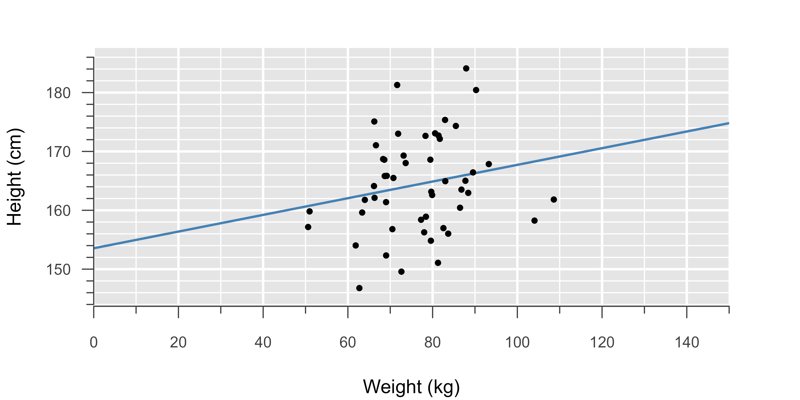
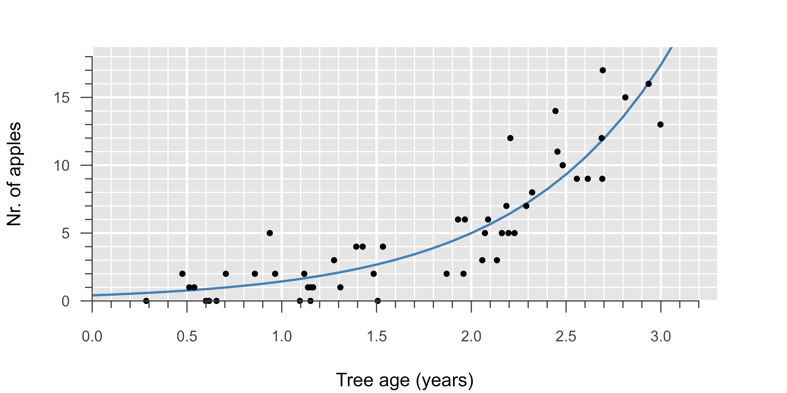
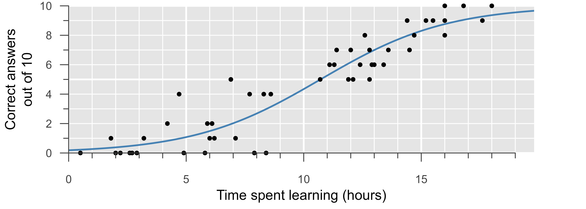
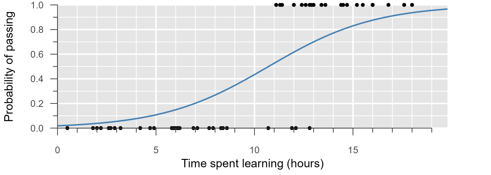

2 Generalized Linear Models
Linear regression with counts, ratios, binary outcomes and more.
2.1 Lecture
Watch the videos on GLM and test your knowledge through the quiz questions. Then, apply your knowledge, by performing a complete analysis. The summary is meant as reference material to answer the quiz questions, should you get stuck.
2.2 Summary
Mathematical formula:
\[\begin{align} \label{lm} y &= \beta_0 + \beta_1 \cdot x + \epsilon \\ \tag{1a}\\ \epsilon &\sim \mathcal{N}(0, \, \sigma^2) \end{align}\]
\[\begin{align} \label{glmnorm} y|x &\sim \mathcal{N}(\mu, \, \sigma^2) \\ \\ \mu &= \eta\tag{1b}\\ \\ \eta &= \beta_0 + \beta_1 \cdot x \end{align}\]
An ordinary linear model can also be written as a generalized linear model (GLM). This helps to see how ordinary linear models fit into the broader GLM framework.
Compare this to Poisson or binomial regression: In each case, we are estimating the mean of a distribution (here: \(\mu\)), and that mean changes depending on the explanatory variable (\(x\)).
The middle equation is the link function—how the mean relates to the linear equation (\(\eta\)). For a normal distribution, this is called the identity, which leaves the linear predictor unchanged, such that the linear equation is the mean of the resulting normal distribution.
Code:
model <- lm(y ~ x, data)import statsmodels.formula.api as smf
model = smf.ols("y ~ x", data).fit()
Symbols & definitions
- \(y\) — response variable
-
The outcome.
- \(x\) — explanatory variable
-
The variable the outcome is regressed on.
- \(y|x\) — conditional response variable
-
The outcome at a given value of \(x\). (Read: \(y\) given \(x\).)
- \(\mathcal{N}\) — normal distribution
-
See Normal Distribution. \(y|x \sim \mathcal{N}\! \left(\mu, \, \sigma^2\right)\) means: The outcome follows a conditional normal distribution with mean \(\mu\) and variance \(\sigma^2\). It is called conditional, because \(\mu\) is not a fixed number, but depends on \(x\).
- \(\theta\) — natural parameter
-
The parameter in which the formula of the distribution is written in a GLM. Only needed here, to explain what makes the canonical link canonical.
More
A GLM involves three quantities: the linear predictor (\(\eta\)), the mean (\(\mu\)), and the natural parameter (\(\theta\)). The link function connects \(\eta\) to \(\mu\), and the distribution itself connects \(\theta\) to \(\mu\). With the canonical link, these two connections cancel out, so the linear predictor is that parameter: \(\eta = \theta\). With any other link, there is an extra conversion step in between. See also here. - link function
-
A function that stretches the possible range of the mean of the distribution from \(-\infty\) to \(+\infty\). This ensures the model can only predict valid values.
- canonical link function
-
The one link function for which the linear predictor is the natural parameter (\(\eta=\theta\)). For the normal distribution, the natural parameter is the mean itself, so the canonical link is the [identity function] (https://en.wikipedia.org/wiki/Identity_function), which amounts to doing nothing. No transformation is needed anyway, because the mean of a normal distribution can already take on any value.
- \(\eta\) — linear predictor
-
The function that describes the relationship between the explanatory variable and the (transformed) mean of the outcome.
- \(\beta_0\) — intercept
-
Mean of the outcome (\(y\)), when the explanatory variable (\(x\)) is zero. \(\hat{\beta}_0\) (beta-hat) is its estimate.
- \(\beta_1\) — slope
-
Change in the mean of the outcome (\(y\)), when the explanatory variable (\(x\)) increases by one. \(\hat{\beta}_1\) (beta-hat) is its estimate.
Explanation
Ordinary linear models are a special case of generalized linear models (GLMs). Whereas the former only support normally distributed errors, GLMs can handle any probability distribution in the exponential dispersion family.
To understand GLMs, try to let go of the idea that a linear model is \(\text{linear function} + \text{error}\), and instead take on a different perspective: A GLM is a probability distribution with a mean that depends on the explanatory variable (\(x\)). The technical term for this is conditional normality: If we know the value of the \(x\), then at that point, the outcome follows a normal distribution. Move to a different value of \(x\) and the mean of the distribution changes. This concept is visualized in the first video on GLM.
Once we take on the perspective of a conditional probability distribution for the outcome, we can easily swap that distribution with another one, like Poisson or binomial. The only missing piece to do this is called the link function. Its purpose is to ensure the linear function will always output valid values (e.g., counts cannot be negative). If the link function also happens to coincide with the mean of the chosen probability distribution, it is called the canonical link function.
In the case of a normal distribution \(\mathcal{N}\! \left(\mu, \, \sigma^2\right)\), the mean \(\mu\) can already take on any value from \(-\infty\) to \(+\infty\), so no such translation is needed and we use what is called the identity function (it simply outputs the same value as the input). Since the identity link function coincides with the mean of the normal distribution, it is canonical.
When would you use a normal GLM with non-canonical link?
It is possible to use different link functions for a normal GLM (e.g., the logarithm). This is not the same as simply transforming the outcome. Below is an overview contrasting both methods.
| LM with \(\log(y)\) as outcome | Normal GLM with log-link | |
|---|---|---|
| Rationale | You expect the outcome (including the errors) to grow exponentially with the explanatory variable. Errors grow larger as \(y\) increases. | You expect the trend (excluding errors) to be exponential. Error variance is constant along this trend. |
| Example | Someone who spends $100 on average will have smaller absolute spread in spending than someone who spends $1,000 on average. | A deterministic process like laser intensity as a function of distance still has measurement error. This can cause a constant spread along an exponential relationship. |
| Disadvantage | Transforming back to the original scale is not straightforward, due to retransformation bias and requires e.g., a smearing estimate [1]. | Less common in practice. In most real-world processes, if something grows exponentially, its spread tends to grow exponentially too. |
Differences between the output of lm and glm
An ordinary linear model (LM) is a special case of a generalized linear model (GLM). Compare the output of lm with that of glm:
# Ordinary linear model
LM <- lm(Sepal.Length ~ Petal.Length, data = iris)
summary(LM)
Call:
lm(formula = Sepal.Length ~ Petal.Length, data = iris)
Residuals:
Min 1Q Median 3Q Max
-1.24675 -0.29657 -0.01515 0.27676 1.00269
Coefficients:
Estimate Std. Error t value Pr(>|t|)
(Intercept) 4.30660 0.07839 54.94 <2e-16 ***
Petal.Length 0.40892 0.01889 21.65 <2e-16 ***
---
Signif. codes: 0 '***' 0.001 '**' 0.01 '*' 0.05 '.' 0.1 ' ' 1
Residual standard error: 0.4071 on 148 degrees of freedom
Multiple R-squared: 0.76, Adjusted R-squared: 0.7583
F-statistic: 468.6 on 1 and 148 DF, p-value: < 2.2e-16# Generalized linear model
GLM <- glm(Sepal.Length ~ Petal.Length, data = iris, family = "gaussian")
summary(GLM)
Call:
glm(formula = Sepal.Length ~ Petal.Length, family = "gaussian",
data = iris)
Coefficients:
Estimate Std. Error t value Pr(>|t|)
(Intercept) 4.30660 0.07839 54.94 <2e-16 ***
Petal.Length 0.40892 0.01889 21.65 <2e-16 ***
---
Signif. codes: 0 '***' 0.001 '**' 0.01 '*' 0.05 '.' 0.1 ' ' 1
(Dispersion parameter for gaussian family taken to be 0.1657097)
Null deviance: 102.168 on 149 degrees of freedom
Residual deviance: 24.525 on 148 degrees of freedom
AIC: 160.04
Number of Fisher Scoring iterations: 2Both methods produce identical estimates and standard errors, demonstrating that a normal GLM is not fundamentally different than an ordinary linear model.
Differences between lm and glm include:
lmshows a simple summary of the residuals,glmdoes not. This is because GLMs are not limited to normally distributed errors, so it does not necessarily help to inspect the residuals. (For distributions other than normal, there is no possible decomposition into \(\text{linear function} + \text{error}\).)lmalways shows a \(t\)-value.glmshows a \(t\)-value for some distributions and a \(z\)-value for others (particularly Poisson and binomial). The reason for this is a bit technical, but it boils down to whether the spread of the outcome had to be estimated from the data. For the normal distribution it does (\(\sigma^2\)), soglmshows \(t\)-values here too. For Poisson and binomial GLMs, the spread follows from the mean, nothing extra is estimated, andglmshows \(z\)-values. A longer explanation is included at the end.lmshows \(R^2\) and \(R^2_{\mathrm{adjusted}}\), a GLM does not. This is because GLMs do not explain variance (\(\sigma^2\)), but a more broad definition of spread, called deviance.glmdoes not show the residual standard deviation for the same reason.lmincludes an omnibus \(F\)-test. This test is not suitable for GLMs, so it is not included in the output ofglm.glmshows the null and residual deviance. Deviance is a measure of spread that applies more generally than the variance (\(\sigma^2\)).- This gives you a similar piece of information as \(R^2\) does in
lm: There was originally a deviance of102.168, and only24.525left. - In the special case of a normal GLM, the deviance explained coincides with the variance explained: \(1 - \frac{\texttt{24.525}}{102.168} = 76\%\), again showing that an ordinary linear model is the same as a normal GLM with identity link.
- This gives you a similar piece of information as \(R^2\) does in
glmshows the Akaike information criterion (AIC) value by default,lmdoes not. This difference is superficial, as AIC is well-defined for both models (tryAIC(LM)). Note that this number is useless in isolation—it is only useful when comparing models.- At the bottom,
glmshows the number of iterations it took for the fitting procedure to converge, by means of Fisher scoring. This is a fast method for obtaining the estimates of a GLM, which is not used inlm.
Technical explanation: \(t\)-values vs \(z\)-values
The test statistic (\(t\) or \(z\)) of a regression table is an estimate divided by its standard error. This standard error depends on the spread of the outcome:
- If the spread is presumed known, the statistic is compared to a normal distribution (a \(z\)-value). This is the case for Poisson (\(\text{mean}=\text{variance}=\lambda\)) and binomial (\(\text{variance}= np(1-p)\)).
- If the spread is estimated, this adds uncertainty. The statistic is then compared to a \(t\)-distribution with the residual degrees of freedom, whose heavier tails account for that extra uncertainty. This is the case for normal, but also gamma, quasi-Poisson and quasi-binomial GLMs.
Try for example, fitting one of the Poisson GLM examples with family = "quasipoisson". The \(z\)-values become \(t\)-values, because the dispersion is now estimated separately.
The \(t\)-distribution is exact only for the normal distribution. For all other GLMs, both \(t\) and \(z\) are large-sample approximations. In practice, model assumptions rarely hold exactly. Hence, this technical difference is not so important, and there also exist better, more general methods of obtaining \(p\)-values and confidence intervals, like bootstrapping.
Example
Refer to the previous chapter.

Mathematical formula:
\[\begin{align} \label{glmpois} y|x &\sim \mathsf{Pois}(\lambda) \\ \\ \tag{2}\log(\lambda) &= \eta \\ \\ \eta &= \beta_0 + \beta_1 \cdot x \end{align}\]
Code:
model <- glm(y ~ x, data, family = "poisson")import statsmodels.api as sm
import statsmodels.formula.api as smf
model = smf.glm("y ~ x", data, family = sm.families.Poisson()).fit()
Symbols & definitions
- \(y\) — response variable
-
The outcome.
- \(x\) — explanatory variable
-
The variable the outcome is regressed on.
- \(y|x\) — conditional response variable
-
The outcome at a given value of \(x\). (Read: \(y\) given \(x\).)
- \(\mathsf{Pois}\) — Poisson distribution
-
See Poisson Distribution. \(y|x \sim \mathsf{Pois}(\lambda)\) means: The outcome follows a conditional Poisson distribution with rate \(\lambda\). It is called conditional, because \(\lambda\) is not a fixed number, but depends on \(x\).
- \(\theta\) — natural parameter
-
The parameter in which the formula of the distribution is written in a GLM. Only needed here, to explain what makes the canonical link canonical.
More
A GLM involves three quantities: the linear predictor (\(\eta\)), the mean (\(\mu\)), and the natural parameter (\(\theta\)). The link function connects \(\eta\) to \(\mu\), and the distribution itself connects \(\theta\) to \(\mu\). With the canonical link, these two connections cancel out, so the linear predictor is that parameter: \(\eta = \theta\). With any other link, there is an extra conversion step in between. See also here. - link function
-
A function that stretches the possible range of the mean of the distribution from \(-\infty\) to \(+\infty\). This ensures the model can only predict valid values. For a Poisson GLM, that means non-negative counts.
- canonical link function
-
The one link function for which the linear predictor is the natural parameter (\(\eta=\theta\)). For the Poisson distribution, this is the natural logarithm: \(\log(\lambda)\).
- \(\eta\) — linear predictor
-
The function that describes the relationship between the explanatory variable and the (transformed) mean of the outcome.
- \(\beta_0\) — intercept
-
Mean of the linear predictor (\(\eta\)), when the explanatory variable (\(x\)) is zero. \(\hat{\beta}_0\) (beta-hat) is its estimate. For a Poisson GLM with log-link, \(\exp(\beta_0)\) is the mean count at \(x=0\).
- \(\beta_1\) — slope
-
Change in the mean of the linear predictor (\(\eta\)), when the explanatory variable (\(x\)) increases by one. \(\hat{\beta}_1\) (beta-hat) is its estimate. For a Poisson GLM with log-link, \(\exp(\beta_1)\) is the multiplicative change in mean count when \(x\) increases by \(1\) (see: GLM Regression Table ).
Explanation
A Poisson GLM is used to model count data. It is the model of choice when counts are truly independent and occur at a fixed rate—that is, when the rate depends only on the explanatory variable (\(x\)).
In a Poisson GLM, we estimate the rate of occurrence (\(\lambda\)). Since events cannot occur at a negative rate, a suitable link function must ensure \(\lambda \geq 0\). A common choice is the natural logarithm \(\log(\lambda) = \eta\), because it implies \(\lambda = e^{\eta}\) (always positive). This is also the canonical link function of a Poisson GLM. An example of a non-canonical link function is the square root \(\sqrt{\lambda} = \eta\).
In practice, counts are often correlated, zero-inflated, or otherwise not truly independent and occurring at a fixed rate. For an explanation of this topic, as well as alternatives to Poisson regression, refer to the fourth video on GLM.
Example
Refer to the tutorials below.

Mathematical formula:
\[\begin{align} \label{glmbinom} y|x &\sim \mathsf{Binom}(n, \, p) \\ \\ \tag{3a}\log \left( \frac{p}{1-p} \right) &= \eta \\ \\ \eta &= \beta_0 + \beta_1 \cdot x \end{align}\]
Code:
model <- glm(cbind(success, failure) ~ x, data, family = "binomial")import statsmodels.api as sm
import statsmodels.formula.api as smf
model = smf.glm("success + failure ~ x", data,
family = sm.families.Binomial()).fit()
Mathematical formula:
\[\begin{align} \label{glmbern} y|x &\sim \mathsf{Bernoulli}(p) \\ \\ \tag{3b}\log \left( \frac{p}{1-p} \right) &= \eta \\ \\ \eta &= \beta_0 + \beta_1 \cdot x \end{align}\]
Code:
model <- glm(y ~ x, data, family = "binomial")import statsmodels.api as sm
import statsmodels.formula.api as smf
model = smf.glm("y ~ x", data, family = sm.families.Binomial()).fit()
Symbols & definitions
- \(y\) — response variable
-
The outcome.
- \(x\) — explanatory variable
-
The variable the outcome is regressed on.
- \(y|x\) — conditional response variable
-
The outcome at a given value of \(x\). (Read: \(y\) given \(x\).)
- \(\mathsf{Binom}\) — binomial distribution
-
See Binomial Distribution. \(y|x \sim \mathsf{Binom}(n, \, p)\) means: The outcome follows a conditional binomial distribution with \(n\) trials and probability of success \(p\). It is called conditional, because \(p\) is not a fixed number, but depends on \(x\).
- \(\mathsf{Bernoulli}\) — Bernoulli distribution
-
A binomial distribution with one trial simplifies to what is called the Bernoulli distribution.
- \(\theta\) — natural parameter
-
The parameter in which the formula of the distribution is written in a GLM. Only needed here, to explain what makes the canonical link canonical.
More
A GLM involves three quantities: the linear predictor (\(\eta\)), the mean (\(\mu\)), and the natural parameter (\(\theta\)). The link function connects \(\eta\) to \(\mu\), and the distribution itself connects \(\theta\) to \(\mu\). With the canonical link, these two connections cancel out, so the linear predictor is that parameter: \(\eta = \theta\). With any other link, there is an extra conversion step in between. See also here. - link function
-
A function that stretches the possible range of the mean of the distribution from \(-\infty\) to \(+\infty\). This ensures the model can only predict valid values. For a binomial GLM, that means probabilities between \(0\) and \(1\).
- canonical link function
-
The one link function for which the linear predictor is the natural parameter (\(\eta=\theta\)). For the binomial distribution, this is the logarithm of the odds, or logit: \(\log \left( \frac{p}{1-p} \right)\).
- \(\eta\) — linear predictor
-
The function that describes the relationship between the explanatory variable and the (transformed) mean of the outcome.
- \(\beta_0\) — intercept
-
Mean of the linear predictor (\(\eta\)), when the explanatory variable (\(x\)) is zero. \(\hat{\beta}_0\) (beta-hat) is its estimate. For a binmial GLM with logit-link, \(\exp(\beta_0)\) is the mean odds at \(x=0\). No direct interpretation in terms of probability is possible.
- \(\beta_1\) — slope
-
Change in the mean of the linear predictor (\(\eta\)), when the explanatory variable (\(x\)) increases by one. \(\hat{\beta}_1\) (beta-hat) is its estimate. For a binomial GLM with logit-link, \(\exp(\beta_1)\) is the multiplicative change in mean odds when \(x\) increases by \(1\) (see: GLM Regression Table ). No direct interpretation in terms of probability is possible.
Explanation
A binomial GLM is used to model ratios and binary outcomes. It is the model of choice when the trials are truly independent and the probability of success fixed—that is, when the probability of success depends only on the explanatory variable (\(x\)).
In a binomial GLM, we estimate the probability of success (\(p\)). Since probabilities must be within \(0\) and \(1\), a suitable link function must ensure \(0 \leq p \leq 1\). A common choice is the logit \[\log\left(\frac{p}{1 - p}\right) = \eta \quad \implies \quad p = \frac{1}{1 + e^{-\eta}}\] which is between \(0\) and \(1\) for any value of \(\eta\). This is also the canonical link function of a binomial GLM. Examples of non-canonical link functions include the probit \(\Phi^{-1}(p) = \eta\) and the complementary log-log \(\log(-\log(1 - p)) = \eta\).
Often, trials are correlated or otherwise not truly independent and occurring with a fixed probability of success. For an explanation of this topic, as well as alternatives to binomial regression, refer to the fourth video on GLM.
Finally, if you have the choice—such as during the study design phase—always use the original number of successes and failures, not a percentage or proportion. Computing a percentage discards valuable information (i.e., the number of trials).
Example
Refer to the tutorials.
2.3 Quiz
Which of the following is implicitly assumed in a generalized linear model? (choose one)
A. The data follow a distribution in the exponential dispersion family
B. The outcome follows a distribution in the exponential dispersion family
C. The residuals follow a distribution in the exponential dispersion family
D. The outcome conditionally follows a distribution in the exponential dispersion family
Hint
See the first video on GLM.
Which of the following is implicitly assumed in a generalized linear model? (choose one)
A. The data follow a distribution in the exponential dispersion family
B. The outcome follows a distribution in the exponential dispersion family
C. The residuals follow a distribution in the exponential dispersion family
D. The outcome conditionally follows a distribution in the exponential dispersion family
Learn why
The distributional assumption is about the conditional outcome, which means: At any given value of the explanatory variable (\(x\)), the outcome is assumed to follow the specified distribution. But the unconditional outcome (disregarding the value of \(x\)) is not assumed to follow anything.
In mathematical terms,
\[\begin{aligned} y &\not\sim \text{probability distribution} \\ \\ y|x &\sim \text{probability distribution} \end{aligned}\]GLMs make no assumptions about your entire data set, nor your outcome variable. The residuals are also irrelevant, as a GLM has no error term in its equation. The randomness instead comes from the specified probability distribution.
Which probability distributions are associated with these processes?
- The number of bees visiting flowers in one minute.
- The number of germinated seeds in a pot, out of 20 planted.
- Cortisol concentration in blood plasma samples (ng/mL).
- Presence or absence of sharks in different locations.
Hint
Choose from among: normal, Poisson, Bernoulli, binomial.
Which probability distributions are associated with these processes?
- The number of bees visiting flowers in one minute. Poisson
- The number of germinated seeds in a pot, out of 20 planted. binomial
- Cortisol concentration in blood plasma samples (ng/mL). normal
- Presence or absence of sharks in different locations. Bernoulli
Learn why
- The number of bees per minute is a count over a fixed time window, so a starting point would be a Poisson distribution.
- The number of germinated seeds sounds like a count, but beware: there is a hard upper limit (\(20\) seeds planted). Hence, it is better to consider this the number of successes out of \(20\) trials (a ratio), which can be modeled with a binomial distribution.
- Concentration is a continuous outcome, so a starting point could be an ordinary linear model (normal distribution). If cortisol concentrations turn out to be highly skewed, we could try transformation (e.g., modeling \(\log_{10}(\mathrm{concentration})\) instead), or using a distribution that can be right-skewed, like the gamma distribution.
- If we don’t count sharks, but simply note their presence/absence, this is a binary outcome. This can be modeled with a binomial distribution with a single trial. This is also called a Bernoulli distribution.
Which statements are correct?
- Overdispersion leads to poor estimates of the intercept and slope.
- Correlation among observations can cause both over- and underdispersion.
- Overdispersion can be resolved by changing link functions.
- Counts are always (conditionally) Poisson distributed.
- A negative binomial distribution can be used to model count data.
- Ordinary linear models cannot be overdispersed.
Hint
All of these are covered in the fourth video on GLM.
Which statements are correct?
- Overdispersion leads to poor estimates of the intercept and slope.
- Correlation among observations can cause both over- and underdispersion.
- Overdispersion can be resolved by changing link functions.
- Counts are always (conditionally) Poisson distributed.
- A negative binomial distribution can be used to model count data.
- Ordinary linear models cannot be overdispersed.
Learn why
- Overdispersion means that at any predicted value of the outcome, there is more spread in observed values than you would expect. This means 1 is incorrect, because the issue is not the estimates but their uncertainty (standard errors).
- Positive correlation leads to overdispersion, whereas negative correlation leads to underdispersion, as shown in the video on overdispersion . Hence, 2 is correct.
- Changing a link function changes the estimated relationship (although usually the effect is small). For the same reason as 1 then, 3 is incorrect, as excess spread is not addressed this way.
- A Poisson distribution does arise in theory if counts are independent and occurring at a fixed rate. However, in real life, these are rarely realistic assumptions and at best, they hold approximately. Hence, 4 is incorrect.
- Despite the name, negative binomial is an alternative to the Poisson (not binomial) distribution that is commonly used to address overdispersion. Hence, 5 is correct.
- Overdispersion happens because the Poisson and binomial distribution only have a single free parameter (\(\lambda\) and \(p\), respectively). In ordinary linear models, there is a separate parameter for the variance (\(\sigma^2\)), so it is not possible to have overdispersion. Hence, 6 is correct. Variance is not always constant in ordinary linear models, but that is a separate issue.
Interactive apps
Practice the concepts covered in this chapter:
Both apps run in your browser. The first time, your browser downloads about 50 MB, which can take a minute or more.
2.4 Apply your knowledge
Now analyze a dataset yourself. Start with the worked examples, then do the exercise:
How to read data in R
- Save the data and qmd file in the same location on your computer.
- Open the qmd file in RStudio.
- Set working directory to source file location.
(Session > Set Working Directory > To Source File Location) - R will now read from the folder the qmd file is located, so you can just use
read.csv("name-of-data.csv").